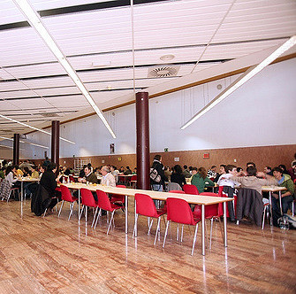
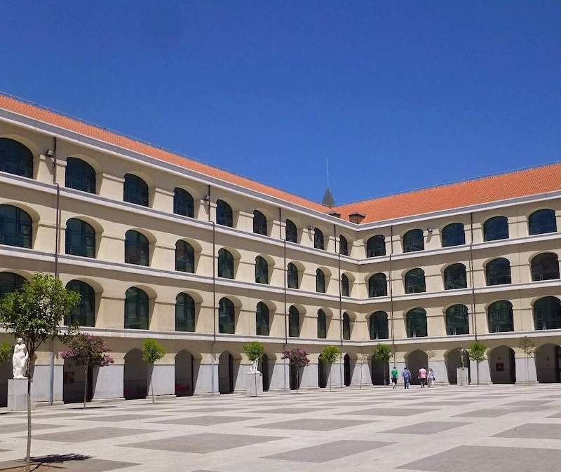

<!--
  Generated template for the MenuPage page.

  See http://ionicframework.com/docs/components/#navigation for more info on
  Ionic pages and navigation.
-->
<ion-header>
  <ion-navbar>
    <ion-title>menu</ion-title>
  </ion-navbar>
</ion-header>

<ion-content padding class="card-background-page">
  <ion-fab bottom right>
    <button ion-fab color="primary">
      <ion-icon name="cart"></ion-icon>
    </button>
  </ion-fab>

  <ion-card>
    
    <ion-card-header>
      <ion-card-title>Bebidas</ion-card-title>
    </ion-card-header>
  </ion-card>
  <ion-card>
    <ion-card-header>
        
      <ion-card-title>Desayunos</ion-card-title>
    </ion-card-header>
  </ion-card>
  <ion-card>
    <ion-card-header>
        
      <ion-card-title>Raciones</ion-card-title>
    </ion-card-header>
  </ion-card>
  <ion-card>
      <ion-card-header>
          
        <ion-card-title>Raciones</ion-card-title>
      </ion-card-header>
    </ion-card>
    <ion-card>
        <ion-card-header>
            
          <ion-card-title>Raciones</ion-card-title>
        </ion-card-header>
      </ion-card>
</ion-content>
